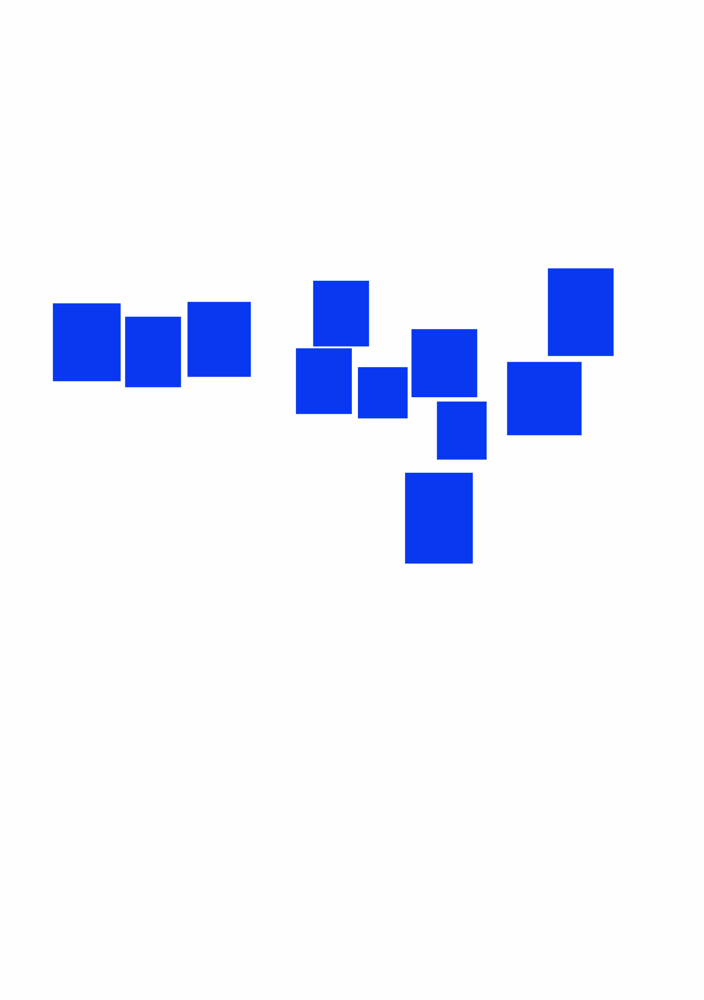
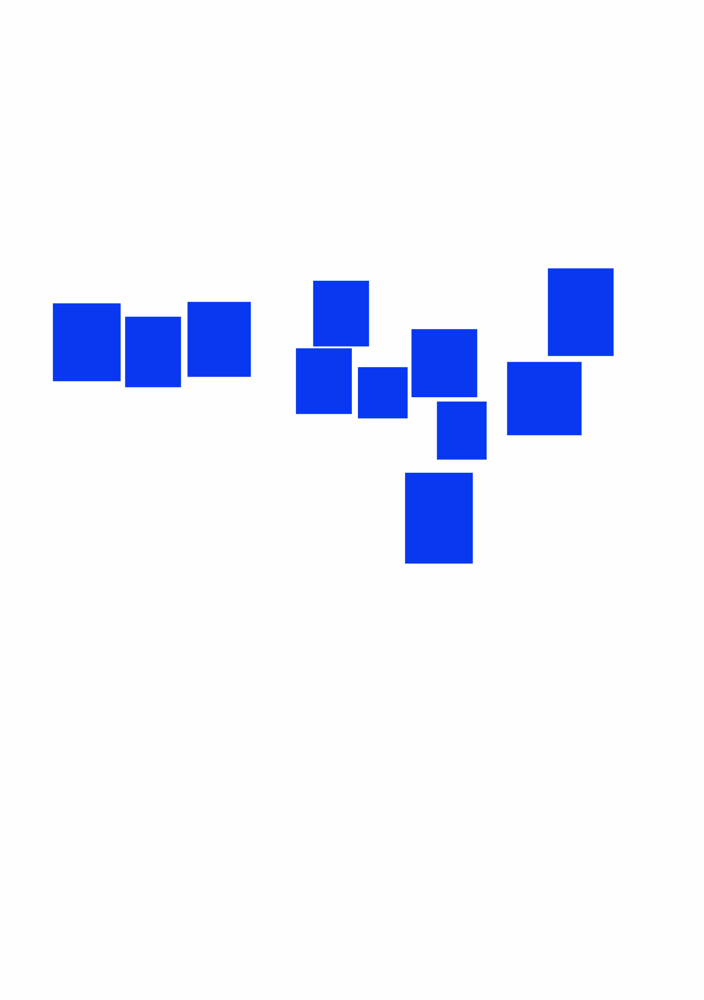

Sobre el proyecto
En este proyecto, desarrollamos un fanzine titulado ¿Por qué no soy feliz?, una reinterpretación contemporánea y emocional de El Principito. La propuesta surgió en colaboración con estudiantes de diseño de Polonia y España, y parte de una reflexión compartida: hoy en día, muchos niños y adolescentes pierden su infancia demasiado pronto, arrastrados por las presiones sociales, la inmediatez de las redes o contextos de vida extremos. Lejos de seguir una adaptación literal del cuento original, decidimos utilizar sus símbolos —el zorro, las estrellas, el juego— como punto de partida para construir una narrativa visual y personal. El fanzine adopta un tono introspectivo, caótico y fragmentado, que refleja el modo en que muchas personas experimentan el crecimiento: sin orden, sin respuestas claras y con una constante sensación de desconexión.
Desarrollo y estructura del proyecto
 

El fanzine fue diseñado en formato B5 (18,2 x 25,7 cm), un tamaño que nos permitió equilibrar comodidad de lectura con espacio suficiente para experimentar visualmente. Para garantizar la coherencia compositiva, utilizamos una retícula base de 12,7 x 12,7 mm, sobre la cual construimos la maquetación completa del proyecto, respetando siempre los márgenes necesarios para la impresión. A partir de esta base estructural, desarrollamos cada página combinando tipografía con elementos visuales en formato collage, integrando tanto técnicas digitales como manuales. Esta mezcla nos permitió explorar una narrativa más expresiva y emocional, coherente con el tono introspectivo del fanzine. La maquetación final fue realizada en Adobe InDesign, mientras que la edición de imágenes se trabajó principalmente en Adobe Photoshop, lo que nos permitió mantener control técnico sobre el diseño y asegurar una calidad de impresión óptima.
← Volver a Mis Trabajos